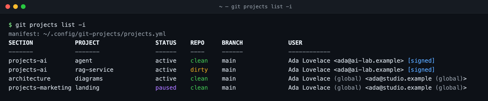

Describe your projects once (where they live, their remotes, and who you commit as) and manage them all from the terminal. Keep the file in your vault. When you get a new machine, one command brings back every repo.
curl -fsSL https://raw.githubusercontent.com/milyzc/git-projects-manager/main/install.sh | bash

One table for all your projects: git projects list -i shows the state of each repo and which identity it commits with.
Group your repos in sections and set defaults once per section. The file has no secrets, only paths, public URLs, names and emails, so it is safe to sync, version or put in a vault.
projects-ai: defaults: # inherited by the section user: name: Ada Lovelace email: ada@ai-lab.example signingkey: ~/.ssh/ai_signing.pub sign: true agent: path: ~/projects-ai/agent remote: git@github.com:ada-lab/agent.git rag-service: path: ~/projects-ai/rag-service remote: origin: git@github.com:ada/rag-service.git upstream: git@github.com:ada-lab/rag-service.git submodules: true projects-marketing: landing: path: ~/projects-marketing/landing remote: git@github.com:ada-studio/landing.git status: paused
origin, upstream…), plus branch and submodules.user.name, user.email and SSH, GPG or x509 signing, written to each repo and its submodules.active, paused or archived. Old projects stay on record without cluttering daily work.A handful of commands and flags. list, clone and paths take --section and --status filters.
A table of every repo: missing, clean or dirty, branch, ahead/behind. Add -i to see who each repo commits as, and spot the ones using the wrong email.
Clones what is missing. On repos that already exist it only adds missing remotes, submodules and identity. Run it as often as you like.
Shows what would be cloned or configured, without changing anything.
No SSH key on this machine yet? Rewrites git@ URLs to https on the fly, without editing the file.
Turns a folder that already has the code but no .git (from a backup, say) into a repo connected to its remotes, keeping every local file.
Validates the manifest (duplicate paths, bad fields, private keys used as signing keys) and reports drift between the file and the disk.
One path per line, for scripts: for d in $(git projects paths); do git -C "$d" fetch; done
An includeIf gives current and future submodules (and worktrees) the right identity, so nothing commits as you@hostname.local.
A new laptop, a reinstall, a broken one: restore the file and let the tool do the rest.
git and python3.age file or a private dotfiles repo (recipes).git projects check to validate it.git projects clone: every repo comes back with its remotes, submodules and identity.# example with 1Password
op document get projects.yml --out-file ~/.config/git-projects/projects.yml
git projects check
git projects clone